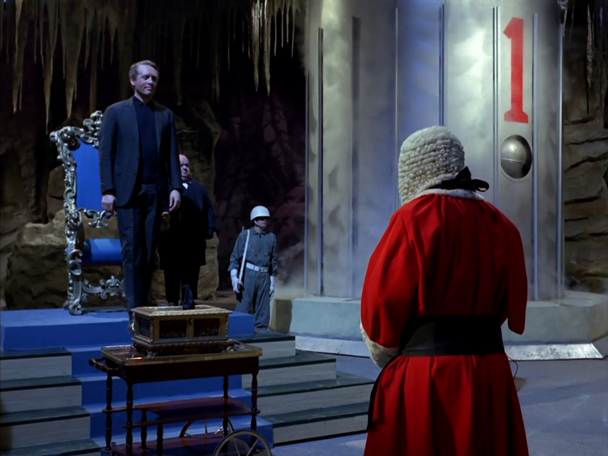
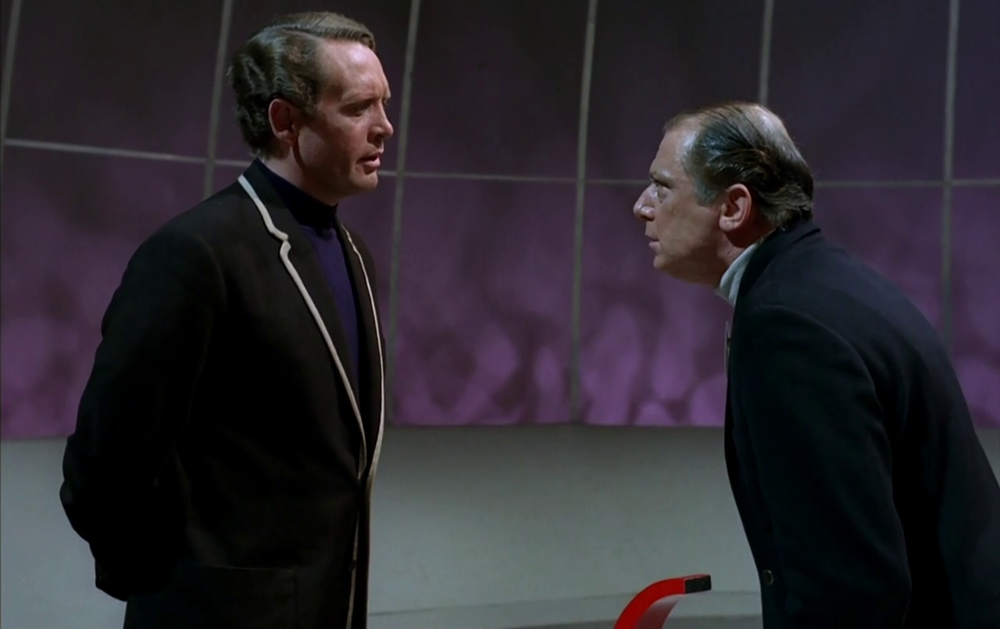

I absolutely adore media that both manages to tell a perfectly coherent narrative, and leaves its audience with a massive list of questions about what they just saw afterwards. I think we might very plausibly describe the best pieces of art as being those that provide the most fertile ground for our own interpretation or analysis of it. Not every single narrative thread needs to end up tied off in a neat little bow by the end of a story, nor does the meaning of every thematic element in a creative project necessarily need to be explicitly explained for that work to be potentially great.
Furthermore, I love discussing various interpretations of these types of stories with other people - both, sharing my own and hearing what others have to say. There's a lot of stories out there that very easily lend themselves to this type of discussion, and most of them have very dedicated fans. That being said, I think a lot of people who enjoy discussing open-ended or thematically-ambiguous narratives often make the mistake of trying to 'solve' them. In my eyes, discussing and analysing a story or a work like this shouldn't be about trying to definitively explain the whole thing - but rather, almost for the sake of having the discussion itself.
That's why I like to enter these sorts of discussions surrounding the more popular pieces of unresolved-mystery-fiction in particular suggesting alternate interpretations to a lot of the typically-accepted fan theories and interpretive consensus. Not strictly to argue that my interpretation is the more-correct or more-valid one, but because I like the interpretative process of rationalising or justifying a unique perspective. And, because those more out-there interpretations continue to stoke conversation more than simply agreeing with the more common views.
To that end, herein I wanted to lay out some of my less-conventional takes on the cult-classic 1967 - 1968 British sci-fi mystery miniseries The Prisoner. I think The Prisoner is an all-time classic in terms of compelling television storytelling. Within the span of just seventeen total episodes, it established and resolved plenty of discrete mysteries, showcased some phenomenal writing, acting, and set design, and conveyed an interwoven overarching narrative that still feels unique even six decades later. It's the sort of work you might not even truly appreciate the legacy and influence of, until you see it for yourself and realise just how much it clearly set the mould for a lot of subsequent surreal Sixties sci-fi, spy thriller-fiction, and the concept of the writer-director-actor auteur-driven miniseries as a whole.
Highly enjoyable, and well-written, as it is, The Prisoner does still leave a lot of questions up in the air by the time the final episode's credits roll. That's exactly why I wanted to talk about it specifically here. The Prisoner teases apparent narrative contradictions and leaves out just enough plot information to keep you guessing, but is such a focused and masterfully made series that the viewer will know better than to simply chalk those omissions up to being mere oversight.
Ideally, my readers here will already be familiar with the series itself, up to and including the sudden and surreal ending. So, I won't spell out every detail of the show here, although I will contextualise the series' origins to the degree it will be pertinent - and from this point onwards, consider this your hard spoiler warning for the entirety of the The Prisoner.
For those perfectly willing to read on, I want to give my interpretations to all the biggest questions the show leaves hanging and my rebuttal to all the most common theories that have been lingering around the The Prisoner fanbase for sixty years now. Namely:
• Why did Number Six resign?
• What did it all mean?
• What was up with that ending?
• Who is Number One?
• Is this whole show a secret-sequel to lead actor Patrick McGoohan's earlier work?
• And, what episode order is this show even supposed to be watched in?
I feel I have strong answers to all these persisting questions. All of which decidedly break from the informal consensus achieved within the largest part of the enduring The Prisoner fan community.
That biggest single question of the series - the one being asked by virtually all its characters just as eagerly as the audience - is simply: Why did Patrick McGoohan's Number Six resign? The series might never give us an explicit answer, but I personally think the details of that resignation become perfectly apparent once you clue into what The Prisoner as a whole represents.
Now, anyone with even just a passing familiarity with the show could tell you that The Prisoner is, on the surface, essentially about a man with an implied mysterious background in the British intelligence service, who inexplicably wakes up in a small seaside resort town under the control of an unknown authority. He isn't held captive in any traditional sense, per se, but he pointedly isn't allowed to leave either. Everyone in this town is known only by an assigned number, and it's unclear where anyone's loyalties may lie. But we know one thing for certain: the people most identifiably in charge of the town want McGoohan's character - "the new Number Six" - to tell them why he quit his intelligence job just prior to the start of the series.
I can't say exactly why McGoohan's character may have resigned. But, I don't think that in-and-of-itself precisely needs to be known. What I will say is that I have an unconventional interpretation of what they resignation signifies that I think is relevant. To explain that interpretation, and its relevance, I need to contextualise the production of The Prisoner as a series, as being something of a successor to McGoohan's earlier big hit show, Danger Man.
And, I'm just going to preempt what I know some die-hard The Prisoner fans reading this may already be thinking: contrary to some peoples' opinion, I believe McGoohan's character in Danger Man is explicitly not the same person as his character in The Prisoner. I will loop back as to why that isn't the case later. But, for now, it is still important to know what Danger Man is, in order to know what The Prisoner itself is about.
In short, Danger Man was a big series McGoohan did before The Prisoner. It stared him, leading role, as an international secret agent field operative type. And, crucially, it was pitched as the television foil to James Bond - which Eon Production and started developing into a movie franchise a few years prior, to great success. McGoohan's character in Danger Man, John Drake, essentially had the same job as Bond, but he was strictly by the book about it - No going rogue, no drinking on duty, no seducing the lady side-characters, and Drake eschewed guns and violence to the best of his ability.
Danger Man originally lasted two years as a twenty-minute serialised show. Then McGoohan went on a short break, production paused, but eventually he and the powers-that-be negotiated a second run of the show with double the runtime and a significantly bigger budget per episode. Which meant Danger Man ultimately ended up going for another four years, post-hiatus.
During this second run, it really took off. The late Sixties was really big on spy fiction and a lot of different television shows and movie franchises all did their own spin on the premise. But, McGoohan's performance really stuck out in particular. Auidences evidently really liked having a version of the general spy premise that was slower and more subtle than a lot of its contemporaries, because Danger Man ended up being a really big hit. By 1966, McGoohan was the single highest paid performers on British television. And ceratinly one of the most popular too. In fact, it might be fair to say McGoohan was one of the first celebrities who made their name solely in television.
But, after having done Danger Man on-and-off for eight years - while the show was at the height of its popularity - McGoohan suddenly said he thought they'd done enough with the show, and stepped away from it. The show couldn't really go on after that, not when it was so closely tied to its superstar leading man - so, Danger Man ended. Permanently this time. Reportedly, there were no hard feelings among anyone on the production side, McGoohan just thought it was a good time to wrap things up.
However, when the final season of Danger Man eventually finished airing and it was announced there wouldn't be any more, the fanbase didn't take it all that well. We might think of the whole "petuant fans getting all up in arms about the ending of their shows" thing to be a modern, post-Internet phenomenon, but it really has been going on about as long as the public has been consuming fiction. Famously, the first time Arthur Conan Doyle tried killing off Sherlock Holmes there was a big uproar about it and that was in 1893.
Anyway, the point is - the Sixties spy-thriller-consuming public reacted badly to ending of Danger Man. And since McGoohan personally calling it quits was the reason the show had to stop, a lot of his supposed biggest fans got really mad at him specifically. They wrote thousands, maybe tens of thousands, of angry letters to the studio. They started showing up outside his outside his house and making a scene. They demanded that he keep the series going - all really over the top stuff.
It would have been perfectly understandable if McGoohan, seeing all this, would have sworn off acting and public life altogether after that. But instead, he ends up taking a little post-Danger Man break, and he comes back ready to pitch this idea for an entirely new spy miniseries he's already written a dozen episodes for.
This is the show that will end up becoming The Prisoner. The central premise involving a concept he had learnt about while doing Danger Man. That is, during the Second World War - every once in a while the Western Allies would get their hands on a high-level scientist or engineer or bureaucrat or similar who had defected from the Nazis during the war and who wanted to share what they knew. When you get someone like that who wants to come over to your side, you need somewhere to physically put them, for one thing. And these sorts of people aren't prisoners of war exactly, but you also need to keep them out of the way somewhere while you find out what they know. So, what the British government, in particular, did when this started to become something they'd have to deal with is that they basically used eminent domain to take possession of a few big old disused country estates up in the north and they converted the manors and the grounds into simple living spaces for high-level defectors who'd made it into the country.
Danger Man had actually done an episode centered around one of these sorts of institutions, which they'd filmed in and around a small Welsh resort town called Portmeirion. And McGoohan wanted his new show to explore the same general concept in depth - and he and the studio he was with were still welcome to go back and film it at this same town, so that's what they ended up doing.
Again, I will stress here - I maintain that McGoohan's characters in Danger Man and The Prisoner are not the same person. But, I say all this so I can finally get into what I firmly believe The Prisoner is about.
Since so much of what happens in The Prisoner is very abstract, characters are rarely honest, and even most of the broadcast order wasn't even in a proper linear sequence, it's no surprise that ever since the show first came out people have been trying to figure out what it all really means. The most common interpretation that seems to get bandied around among viewers is that the mysterious village represents society at large in some way, and that McGoohan is trying to convey some sort of fairly individualist social message about not wanting to be controlled by unaccountable governmental forces.
They way I see it, that explanation doesn't actually do anything to get into the specific substance of the show. And I think throwing your hands up and saying "the real villian of the piece is society" is such a hack move. Plus, if you really want a properly satisfying answer to the central mystery of this show, you need to drill deeper than just saying "Number Six just doesn't like living in this overbearing society".
I, for one, would sooner suggest - that the plot of The Prisoner, if you can call it an allegory for anything, then it's one big extended metaphor for the public reaction to the ending of Danger Man. Number Six isn't the same character as John Drake, but, Number Six leaving his job is a stand-in for McGoohan deciding to walk away from doing any more Danger Man.
This is why the central question of The Prisoner is the matter of why Six left his prior job. Within this thematic conceit, each of the mysterious village's apparent overseers - the Number Twos - essentially represent the entitled Danger Man fans who demanded answers as to why the show had to end - and who all feel entitled to either a comprehensive answer or, for McGoohan to go back to doing his old show
When Patrick McGoohan, in real life, stopped doing Danger Man he told his bosses, and the press, and his fans very plainly: he just thought they'd done enough and it was time to wrap things up. But still, his fans got in a puff and demanded to know 'the real reason'. To the point where they were even showing up to McGoohan's home and the old Danger Man studio and making a ruckus.
That tracks with the way that in the first episode of The Prisoner, 'Arrival', Number Six was initially cooperative and largely happy to just tell the original Number Two that he just had had enough of his unspecified civil service job and wanted to quietly walk away. In Six's initial meeting with his first Two, he goes so far as to answer a bunch of other seemingly inconsequential questions like how he takes his tea and what his date of birth is. Which, for what its worth, Number Six gives as the 19th March 1928 - the exact same day of McGoohan's real-life birth. Further cluing you in early to the fact that the character is representative of the actor playing him.
And despite his confusion at suddenly waking up in a widely unfamiliar place and being asked all these probing questions, Number Six does answer a lot of these initial questions very amicably, all things considered. To the point where he's even said the reason he walked out of his old job was just that he'd had enough. Now, that's a perfectly good enough answer - and it should essentially put the question to rest. But, what a lot of people who watch this series once miss is that Number Six didn't refuse to tell his captors why he quit - he did right away. And they ignored it.
Later on, towards the end of the first episode, Two takes Six into the 'labour exhange office' for another round of questioning. And it's only then that McGoohan starts getting fed up with all the incessant questions when now he's being asked for a comprehensive review of what he likes to read, what he likes to eat, personal aspirations, family illnesses, religion, politics - all sorts of stuff that shouldn't be germane to finding out why he quit his job. By the end of the episode, Six is getting called into the office of a new Number Two who just asks all the same questions as his predecessor. Which is where McGoohan finally snaps and practically screams "I wasn't the one to make a big fuss out of quitting. I simply finished my job and left on peaceable terms. But you lot won't take that as an answer."
I think everything you really need to 'decode' The Prisoner is virtually right there in those few exchanges in the first episode.
I hate to burst the bubble of anyone who was reading The Prisoner as some really deep critique of proto-security state surveillance tech or anything, or as a covert sequel to the events of Danger Man. But, I really think it's actually just a standalone allegory for one man's annoyance at inadvertently becoming one of the first real media celebrities and then copping a bunch of intrusive fanboy backlash for quitting his star-making role.
It should also be noted that - despite being played by the same actor - the rights to the John Drake character McGoohan played in Danger Man are held by an entirely different IP holder than the owners of The Prisoner. So, even the idea of The Prisoner being retroactively made, or revealed to be, a Danger Man sequel after the fact was never practically going to happen either. And really, to think that they could be, or that they should be - or to continue to think McGoohan should have done a sequel to Danger Man - is to entirely miss the point of The Prisoner. McGoohan didn't want to keep doing the same role forever, he's given you the real simple reason why too - even though, they're not even really entitled to any deeper explanations than that, and they don't seem to listen to them anyway.

The only thing Patrick McGoohan's fey little run couldn't help him escape: entitled fanboy backlash.
That's my big unified theory for how to view The Prisoner as an artistic statement. It isn't, however, the only novel interpretation of the series I like to discuss with other fans of the show. I think there's also a lot of room for innovative thinking when it comes to how we view the actual events of the plot, and don't just get too hung up on looking for thematic meaning and meta-context. While I'm on the topic, I might as well delve into those ideas here too.
In particular, I think a lot of other people who consider themselves The Prisoner fans fail to properly follow along with the show's big, doubly-surreal, two-parter finale. They'll often either misconstrue the events of those two last episodes, or throw their hands up and declare that its just being weird for the sake of being weird and therefore meaningless to analyse. I, on the other hand, think that it's entirely possible to read the final two episodes as a relatively conventional extension of everything else we've seen in the series up until that point - even if I also sincerely think McGoohan also hid one of the show's subtlest implied twists in plain sight within them too.
If you'll recall - in the penultimate episode, 'Once Upon a Time', the unseen powers-that-be bring back one of the Village's earlier Number Twos, played by Leo McKern. And this Two forces McGoohan's Number Six to undergo a really intense, regressive, personal, psycho-drama experience in a replica boarding school classroom with him. Then, when that doesn't accomplish anything, in the very last episode, 'Fall Out', there's a big underground ceremony with a old-timey British judge and a gallery of masked figures who all congratulate Number Six and tell him he's great.
On your first viewing of the series, you'll no doubt probably have more than a few questions about what exactly all this meant to be in service of. But, at the end of the day - I say, the events of these final two episodes aren't really anything all that special. They just happen to be the last ploy to 'break' Number Six we see. It's all very big, very grandiose, very elaborate, and very weird, yes - but, I believe that the whole, mocked-up classroom scenario in 'Once Upon a Time' and the underground cavern ceremony in 'Fall Out' wouldn't necessarily have been the last efforts of the Village to harangue Six. If theoretically the series continued beyond just the seventeen episodes that were made, I think 'Fall Out' could have just as plausibly ended as so many other episodes do, with Number Six still stuck in the Village - frustrated with him as his captors may be.
The Leo McKern boarding school psycho-drama experience isn't even the most complicated or outlandish thing we've seen a Number Two do compared to what we've already seen in the series up to that point. 'The Chimes of Big Ben' showed that it was well within the Village's means to have a whole replica of Six's old office built. 'Living in Harmony' had a whole Wild West set done up that that fooled Number Six for days. And 'The Schizoid Man' demonstrated that the Village has at least one perfect Number Six lookalike on staff too. It just so happens that by the events of the finale, Number Six has long had enough, and he sees his opportunity and he grabs a gun and a truck and makes his escape.
The Village isn't necessarily out of tricks; 'Fall Out' isn't necessarily their final test for Number Six. It just happens to be the episodic premise McGoohan considered a good set up for his story's final chapter. I think people who have seen the entire series always seem to end up ascribing far too much weight to the events of those last two episode up to the point where Six breaks out. Both the week-long intensive boarding school setup and the big underground presentation ceremony afterwards shouldn't be thought of as any more 'revealing' or 'real' than any other elaborate ploy the Village has tried before.
Aside from the fact that Number Six makes his breakout during the finale - the actual 'premise' of the final episode's setup isn't anything inherently special. It just so happens to have been the last one. In my eyes, the events of 'Once Upon a Time' could just as easily have been swapped out with 'The Girl Who Was Death' or 'It's Your Funeral'. Really, you could have swapped the ceremony in the finale with just about any other episode's plot just so long as McGoohan still conceivably has a way to grab a gun and drive off by the end of it. The boarding school isn't special, the cavern ceremony isn't special, the masked gallery isn't special. It's all as fake as anything else the Village puts in front of Number Six - it just so happens to be the last thing they attempt to trick him with.

Number Six never truly 'beat' the Village outright. This coronation ceremony is no more real than the time Six thought he had shipped himself back to London, or that he was about to fly away in his lookalike's helicopter, or that he was going to be forced into a thought-extracting machine, or when he thought he was the marshal of a Wild West town.
On a similar note, talking about how largely interchangeable some episodes of The Prisoner seem gives me the perfect opportunity to digress for a little bit and address the other big conundrum that's remained hanging over this show's fan community for sixty years. That is: the seventeen episodes of The Prisoner don't have a definitive, official, watch-order. We can say with confidence which one comes first and which two are last - but apart from that, the production order, the original UK broadcast order, the international broadcast order, and all of the home media release orders have all been different and sometimes seem completely arbitrary.
You could essentially watch the series in any of those orders - or, even at complete random - and still have the same general experience of the show if you're aware it's supposed to be a non-linear story. But, of course, plenty of diehard The Prisoner fans out there have tried to figure out a coherent timeline and put forward their own chronological watch-orders.
This arguably misses the point of a non-linear story that often seems more interested in theme and tone than sequential narrative. But, nevertheless, I might as well share my own watch-order - because I do have one, and I'd be lying if I said I hadn't put some thought into the topic myself. Here's my preferred episode watch-order, and then I'll briefly explain how I justify it.
1) Arrival
2) The Chimes of Big Ben
3) Dance of the Dead
4) The General
5) A. B. and C.
6) A Change of Mind
7) Checkmate
8) Free for All
9) The Schizoid Man
10) It's Your Funeral
11) Many Happy Returns
12) Living in Harmony
13) Do Not Forsake Me Oh My Darling
14) The Girl Who Was Death
15) Hammer into Anvil
16) Once Upon a Time
17) Fall Out
The way I see it, the most important thing to take into consideration when trying to figure out the The Prisoner timeline is how Number Six is characterised throughout the series. Putting the episodes in this order essentially divides them into three narrative arcs.
Here, in the first five or so episodes, Number Six is relatively passive towards the authority figures of The Village, and his efforts to spoil their attempts to mess with him are all fairly reactive and the plots themselves are all pretty straightforward. Plus, we can make some inferences about how long Six has been around for by the time these episodes are set by how a lot of village life still seems very strange to him in these episodes. I particularly like having 'The Chimes of Big Ben' be second in the series. If only because there's a nice symmetry in having Leo McKern - that episode's Number Two - be both the first new Two introduced after the pilot show up in the second episode, since he'll later come back as the final new Number Two in the series' second-last episode.
'Dance of the Dead' makes for a good third episode because it keeps up that early tone of Six feeling really powerless to stop the Village's overseers from messing with him. Plus, during this episode, Number Six explicitly mentions to another character that he hasn't been being held captive in The Village all that long by this point.
Then, I put 'The General' and 'A. B. and C.' next, and one-after-another, because they're a rare explicit example of the show having a direct continuity between two episodes - in that they share the same Number Two, Colin Gordon. And there's a background sub-plot which runs throughout those two episodes wherein whoever Number Two directly answers to wants the efforts to interrogate Number Six to drastically step up.
That directly leads into the middle chunk of episodes. All of which are arguably some of the strongest standalone stories of the series, also. Where all the Village's schemes all get decidedly bolder and a lot of the Number Twos are played by their respective actors and actresses as a lot more aggressive and willing to use increasingly severe means. Also, in all these episodes, Number Six starts to come across as far more familiar with how the Village operates. He's more at ease even just navigating the place, and you do see him talk with more of the other minor numbered characters out and about and use the local facilities.
By this point, Number Six is also much more successful at properly resisting however the Village is trying to mess with him from episode-to-episode. By 'Free for All' and 'It's Your Funeral', Six is much more savvy to how the mind games of the Village work - but, he does still occasionally get burnt or make a serious mistake here and there. Like at the ends of 'Many Happy Returns', 'Checkmate', and 'The Schizoid Man'.
This leaves the final few episodes before the two-partner final as the place to put the really big desperate ploys Number Six is eventually subjected to. But, it's also worth noting, that in a lot of these bigger, arguably sillier, episodes like 'Living in Harmony' and 'Do Not Forsake Me Oh My Darling' Number Six is now consistently seeing through, and foiling, the plans of these later Number Twos. By the end of 'The Girl Who Was Death', and all throughout 'Hammer Into Anvil', Number Six is now actively messing with his captors instead of the other way round. Which I feel makes them a good crescendo point for the show before the big finale.
Again, strictly speaking, you could watch The Prisoner in any order and get a lot out of it. My big problem with that is that it means you're jumping all over the place in terms of how well Number Six seems to do against the villain of the week. However, with the order I propose, you do end up getting a sense of progress and character growth as the show goes on. With this watch-order, - especially if you're treating The Prisoner as a continuous narrative - it makes Six's escape in the finale feel more like the well-earned culmination of all his prior effort.

Any The Prisoner watch-order makes most sense when you set the episodes where Six gets the upper hand over the Number Two-of-the-week towards the end of the series. It shows he's wising up to some of the Village's tactics.
That being said, given how I see the artistic value of The Prisoner lying more in its thematic conceit than its plot, I'm also personally open to a radically different interpretation of the ending and the chronological sequence of events surrounding it. One idea I've been toying with since my last proper rewatch of the series, is the notion that the entirety of the iconic opening title sequence actually occurs after the events of 'Fall Out'. That is to say, chronologically, it's actually the very last events of the show. It's a fairly radical interpretation, but one I think can actually work.
If you're familiar enough with The Prisoner that you've read this far, then, no doubt you'll recall that fantastic opening. Right at the start of the very first episode, we get an almost three-minute-long sequence where, without any dialogue, you see McGoohan's character drive into London, kick down the doors of what is presumably his bosses' office, slam down an envelope, you see a close-up of his file getting crossed out and put in the "resigned" drawer, and he heads back to his apartment to get gassed unconscious. Almost every subsequent episode then uses a slightly cut-down version of the same introduction with a bit of voiceover from whoever's playing the Number Two that episode. It's become iconic in its own right for good reason.
However, I'm willing to argue, that many people who consider themselves big The Prisoner fans really misconstrue what they see in that introduction. Perhaps just because McGoohan and company intended you to. It's definitely implied that everything we see prior to the title card of the first episode is the resignation from the intelligence service that the Village wants answers about. What if, instead, by the time you've watched every episode you're meant to realise that whole sequence has been drastically re-contextualised and we're now meant to realise that's not actually the case.
For one thing, during that first meeting between Number Six and the first Number Two I mentioned earlier as being key to understanding The Prisoner as an allegory for backlash to the ending of Danger Man, we hear pretty clearly that Six's resignation was a discreet and low-profile thing that he kept his reasons for obviously to himself. That's your first hint that the dramatic barging into someone's office we see in the intro wasn't the resignation that happened prior to the series.
Once you realise that, everything else starts lining up too. Like how, in that intro sequence, McGoohan is driving his snazzy little Lotus kit car and he's wearing an all-black button-up shirt, trousers, and blazer outfit. Of course, during the course of the series, Six doesn't have access to his car in the village. And by the end of the first episode, his original clothes - that all-black outfit he shows up in the Village wearing - are confiscated from him, and he's told they're burnt.
But, during the events of 'Fall Out', it turns out that too was yet another lie, and McGoohan gets his black shirt and blazer back, and he's able to ditch the white-piping rowing club outfit he spent most of the series wearing. So, by the end of the series - by the time Number Six finally breaks out of the Village - he's comfortably back in his starting outfit, his suit and trousers still in the exact same condition they were when we first see him wear them.
And, let's not forget, that in the final few scenes of 'Fall Out', McGoohan - alongside the nameless diminutive butler played by Angelo Muscat - swings by his old apartment and the newly-escaped Number Six gets his old car back. Then the very final shot of the series before the credits roll for the final time is McGoohan speeding down the motorway exactly as he does at the start of the first episode's opening sequence - complete with that rumbling thunder sound effect over the top.
I suggest that it's here - as the show ends - that Number Six is on his way to go and do everything that was portrayed in 'Arrival' prior to the series' first title card. He's about to go burst into someone's office shouting, and slam down an envelope saying "You're this desperate for answers? Fine, here's your comprehensive reason why I quit!"
That next shot of his crossed-out file going into the "resigned" bin isn't from when he first walked out prior to the series' start. It's only from now that he's gone back and loudly made it clear to the powers-that-be that's he's definitely out. Number Six's resignation is only now well and truly finalised for good in their eyes. The simple and quiet walking-away from his prior work for personal reasons Six alludes to in 'Arrival' evidently wasn't enough, so now he goes back to his former employers to really drive the point home.
If I'm right about The Prisoner actually being McGoohan's response to his fans' inappropriate post-Danger Man backlash, then I see the presence of this chronologically-last scene playing at the start of the first episode thematically foreshadowing that. Because, once you've seen that opening, everything that follows - the events of The Prisoner - could be thought of as watching Patrick McGoohan, the real world actor, empathically doubling-down on his resignation from Danger Man.
When his original fanbase couldn't accept he'd left his old role and kept seriously harassing him about it, McGoohan made The Prisoner to drive home the message he wasn't going back to his prior role, and he absolutely doesn't care for the people badgering him to do so or incessantly asking him why he left it in the first place. In effect, you the viewer - particularly the contemporary Sixties Danger Man-come-The Prisoner fanboy viewer - are receiving a loud and clear resignation from the role of John Drake courtesy of Patrick McGoohan.
If you were one of those people who got to watch The Prisoner in its original airing, by the time you were done watching all seventeen episodes of the series, did you finally understand why McGoohan shouldn't be harangued about why he left or returning to his old series? Unfortunately, I'd have to say - statistically not.
Once The Prisoner finished broadcasting its original run in the UK, if anything, the McGoohan fanboys got even weirder about things. And more and more people than ever started showing up to the man's house, and the studio, demanding answers. To the point where McGoohan even felt the need to leave the country for a while for his own safety and wellbeing.
From then on, Patrick McGoohan tried to avoid the public eye as best he could. The man who had at one point arguably been the most recognisable man on television swore off leading any other big TV project. He basically retired then and there, popping up only occasionally to take minor roles in a few movies and theatrical projects which personally interested him - and, of course, guest-starring a handful of times in Colombo, just as a favour for his good friend Peter Falk.
Perhaps, even as he was writing and filming The Prisoner for the first time, McGoohan anticipated this sort of response again. It could be why that intro sequence ends with Number Six succumbing to a cloud of knockout gas. If we do read that sequence as the final events of the series, it means that - alas, yet again - Six seemingly escaped the Village entirely, only to be hauled back once more à la 'The Chimes of Big Ben' or 'Many Happy Returns'. Did McGoohan correctly suspect that even his post-Danger Man-resignation opus wouldn't satisfy his viewers? What good did making and releasing The Prisoner do, if it merely restarted the cycle of impertinent, entitled, questioning he was trying to express his displeasure with.

The very first shot we see of The Prisoner, and also the last. If Number Six is about to perform the events of the opening titles directly after 'Fall Out', that implies he'll be recaptured by the Village shortly after the credits roll for the final time. McGoohan's vision is pessimistic, but perhaps understandable.
That's what I take away from this series. It's a good story, performed superbly, that shows off a lot of fantastic set-dressing and design choices. But as a piece of art - as an auteur-created text - I can't help but read it as an expression of exasperation from a creator trying to escape an almost-unprecedented amount of public pressure. At the very least, I think taking this more contextually-informed view of McGoohan's work leaves the viewer with a more meaningful lesson to be learned, than if you simply tried to grasp at any sort of vague anti-society or anti-technology interpretation of The Prisoner - as I think many are unfortunately quick to.
last major update: May 2026